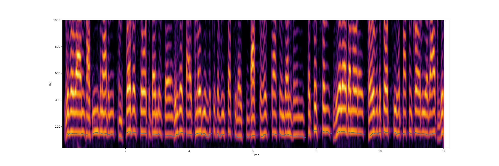

pyin
Abstract
Fundamental tracking implementing the pYIN algorithm
Description
pYIN is a modificatin of the YIN algorithm for f0 estimation. In the first step of pYIN, F0 candidates and their probabilities are computed using the YIN algorithm. In the second step, Viterbi decoding is used to estimate the most likely F0 sequence and voicing flags. This streaming version uses only past observations (no lookahead) and is thus somewhat less effective than offline pyin.
Syntax
kfreq, kconfidence, kvoiced pyin asig, Sarg1, ivalue1, [Sarg2, ivalue2, ...]
Arguments
- asig: audio signal
- Sarg1: argument name, see below
- ivalue1: argument value
| Parameter | Range / Default | Description |
|---|---|---|
| framesize | 1024-8192 (2048) | Analysis frame size in samples |
| hop | 64- (1/4 framesize) | Hop size in samples |
| fmin | 20 - | Min. frequency |
| fmax | 20 - | Max. frequency |
| bins | 2 - 50 | Subdivisions per semitone |
| transition_weight | 0-1 (0.1) | Prob. of switching voiced↔unvoiced |
| minrms | 0-1 | Mark sound with rms below this as silent |
| beta_a | 1 - 3 | param a for beta distr. prior over thresholds. |
| beta_b | 1 - 20 | param b for beta distr. Lower=smoother track |
| drift | 10- (100) | Pitch variation between frames, in cents |
| voiced_obs_floor | 0-1 | Floor for voiced observations |
| octave_cost | 0-0.5 (0.) | Cost of jumping an octave between frames. Use if the algorithm falsely predicts the 2nd overtone as the fundamental |
| subharmonic_tresh | 4 | Used together with octave_cost, controls the threshold of a downward octave jump |
Output
- kfreq: detected frequency. Only valid if confidence is > ~0.4
- kconfidence: detection confidence
- kvoiced: is the sound voiced
Syntax
kfreq, kconfidence, kvoiced pyinf0 asig, iminfreq=60, imaxfreq=1000, ibufsize=2048, ioverlap=4, ktransprob=0.99, ibins=4, kdrift=5
Arguments
- asig: audio signal
- iminfreq: min. frequency for f0 (default=60)
- imaxfreq: max. frequency for f0 (default=1000)
- ibufsize: size of the analysis frame (default=2048)
- ioverlap: overlapping frames. hopsize=bufsize/overlap (default=4)
- ktransprob: hmm transition probability (default=0.99)
- ibins: number of bins per semitone (default=4)
- kdrift: pitch drift between frames, in semitones (default=5)
Execution Time
- Performance
Examples
<CsoundSynthesizer>
<CsOptions>
-odac
</CsOptions>
<CsInstruments>
sr = 44100
ksmps = 64
nchnls = 2
0dbfs = 1
/* example file for pyin
Syntax:
kfreq, kconfidence, kvoiced pyin asig, Sarg1, ivalue1, [Sarg2, ivalue2, ...]
Args:
* asig: audio signal
* Sarg1: an argument name, see below
* ivalue1: the argument value
Output:
* kfreq: detected frequency. Only valid if confidence is > ~0.4
* kconfidence: detection confidence
* kvoiced: is the sound voiced
Parameter Range Default
----------------- ------------ -----------------
framesize 1024 - 8192 2048
hop 64 - 1/4 of framesize
fmin 20 - 60
fmax 20 - 1000
bins 2 - 50 10
transition_weight 0. - 1. 0.1
minrms 0. - 1. 0.
beta_a 1 - 3 2
beta_b 1 - 20 3
drift 10 - 100
voiced_obs_floor 0-1 0.
octave_cost 0. 0. - 0.5
subharmonic_tresh 4 1 - 8
*/
instr 1
asig1 = oscili:a(0.5, 500)
; asig2 = diskin2("../../else/examples/finnegan01.flac", 1, 0, 1)[0]
asig2 = diskin2("../../else/examples/voiceover-fragment-48k.flac", 1, 0, 1)[0]
asig3 = buzz(0.1, 300, 7, -1)
asig4 = pinker() * 0.1
Snames[] fillarray "sine ", "speech", "buzz ", "pink "
ksource init 0
if metro(1/3) == 1 then
ksource = (ksource + 1) % 4
endif
; asig = picksource(ksource, asig1, asig2, asig3, asig4)
asig = asig2
; ar compress2 aasig, acsig, kthresh, kloknee, khiknee, kratio, katt, krel, ilook
asigpyin = compress2:a(asig, asig, -90, -40, -20, 6, 0.01, 0.5, 0.02)
asigpyin *= 3
; asigpyin = asig
kpitch, kconf, kvoiced pyin2 asigpyin, "framesize", 2048, "hop", 256, \
"fmin", 70, "fmax", 600, "transition_weight", 0.01, "beta_b", 1.6, \
"drift", 150, "voiced_obs_floor", 0.1
ksound = schmitt(dbamp(rms(asig)), -45, -60);
kenv = schmitt:k(kconf, 0.3, 0.2) * schmitt:k(kpitch, 90, 75) * ksound;
if metro(24) == 1 && kenv > 0 then
printsk "pitch: %.1f, conf: %d, voiced: %d, sound: %d\n", kpitch, kconf*100, kvoiced, ksound
endif
outch 1, asigpyin * 0.9
outch 2, vco2(0.1, kpitch) * a(kenv)
endin
</CsInstruments>
<CsScore>
i1 1 20
</CsScore>
</CsoundSynthesizer>

LISTENSee also
Metadata
- Author: Eduardo Moguillansky
- Year: 2026
- Plugin: else
- Source: https://github.com/csound-plugins/csound-plugins/blob/master/src/else/src/else.c